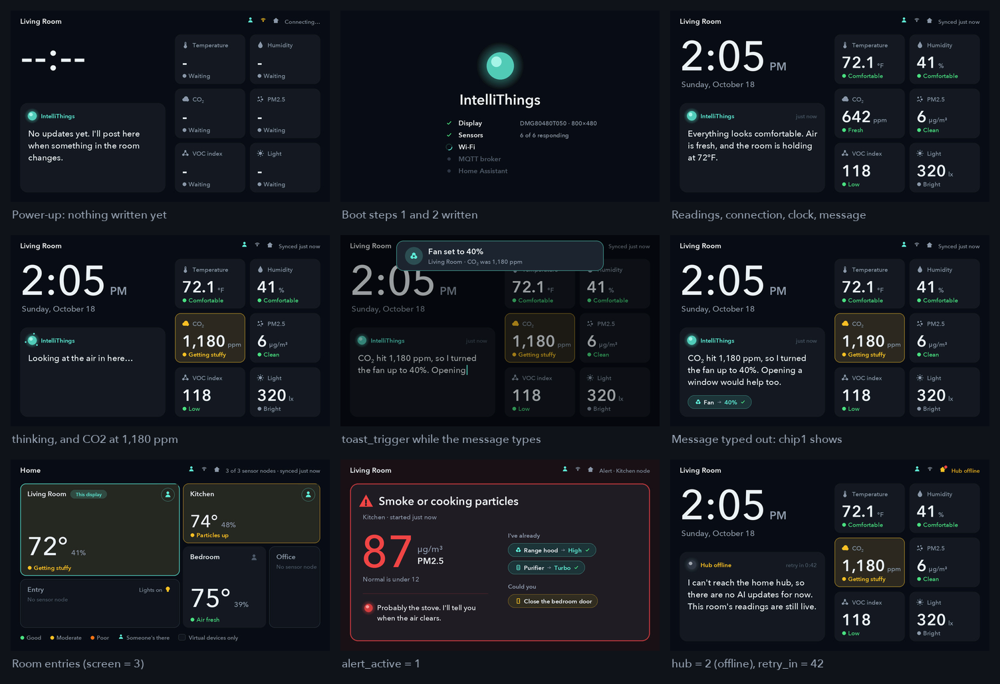

Companion display: handoff
October 18, 2026 · for the software team, from the display bench
The DWIN DMG80480T050_09WN (5", 800×480, no touch) runs the approved display concepts: 13 screen states plus the 24-LED light bar. An ESP32-C6 (the companion, the Waveshare ESP32-C6-LCD-1.47 on the bench) draws them. Until now it played demo data; this handoff is how the node firmware feeds it real numbers.
The short version
- The node writes VPs (16-bit words at addresses
0x1000–0x17FF) with ordinary DGUS write frames,5A A5 <len> 82 <VP> <data>. This is the same workflow the firmware architecture planned for thedwin_displaythread. The table isVP_MAP.html. - Where the frames go: to the companion C6's node link (UART, 115200 8N1, 3.3 V: node TX → GP2, GP3 → node RX, GND), not straight to the panel. The companion owns the panel's own VPs.
-
The minimum for a live demo:
- the sensor block every second (10 words in one frame, in MQTT snapshot order);
wifi,hubandsynced_agowhen they change;- the clock once after SNTP;
message_textfor each…/displaymessage.
The display picks the screen and the light pattern by itself.
-
For the AI message contract (due today): the AI section shows about 110 characters (4 lines). With action chips it shows about 80 (3 lines). Longer text is cut with “…”.
-
No node handy? Try everything from a laptop over the companion's USB:
python tools/companion.py --port /dev/cu.usbmodem… play.

Every screen above comes only from VP writes: real DGUS frames through the companion's decoder,
drawn by the panel simulator (cargo run --example live in firmware/companion-ui).
What's in the folder
| Path | What |
|---|---|
handoff/VP_MAP.html |
The VP map: every address, unit, power-up value and value list, with example frames |
handoff/vp_map.csv, vp_map.json |
The same table for spreadsheets and scripts |
handoff/live-screens.png |
The screens the VP writes above produce |
handoff/dwin_vp.rs |
Drop-in Rust for the node firmware: every address as a constant, plus write_frame, read_frame, text_words, x10 and whole |
tools/companion.py |
Writes VPs by name from a laptop; play runs a scripted live demo (a reference for what the node sends) |
firmware/companion-ui/ |
no_std Rust crate: the DGUS driver, screens, light-bar patterns and the VP decoder (vp.rs). Host-tested |
firmware/companion-node/ |
The companion's firmware (esp-hal 1.2.2 + embassy, the same stack as software/firmware) |
dgus/ |
Builds the panel's DWIN_SET (backgrounds, 3,894 sprites and glyphs, controls) without DWIN's Windows tool. dgus/vpmap.py is the VP map's source |
docs/wiring.png |
Bench wiring diagram |
build/DWIN_SET/ |
The files on the panel's microSD card |
README.md |
Bring-up guide, how it works, file formats |
Wiring on the bench
| From | To | Note |
|---|---|---|
| Bench supply 12.0 V (0.5 A limit) | Display pins 1–2 (+), 7–8 (−) | The panel takes 6–36 V. Never put 12 V on the ESP32 |
| C6 GP18 (UART1 TX) | Display pin 5 (RX2) | Direct; the panel reads 3.3 V |
| Display pin 4 (TX2) | 1 kΩ → C6 GP19, with 2 kΩ from GP19 to GND | TX2 idles at 5 V; the C6 isn't 5 V tolerant (2 × 560 Ω over 2.2 kΩ also works) |
| Display GND | C6 GND | |
| Node TX | C6 GP2 (node link RX) | 3.3 V to 3.3 V, no divider |
| C6 GP3 (node link TX) | Node RX | For the "OK" replies and reads (optional) |
| Node GND | C6 GND | |
| C6 GND | LED strip GND | Required. Without it the strip's current flows through GP20: random flicker, and it can destroy the C6 |
| C6 5V | LED strip 5V | Under 0.5 A at the firmware's brightness cap. A 470–1000 µF capacitor at the strip helps |
| C6 GP20 | 330 Ω → LED strip DIN | Resistor near the strip. Until a strip is fitted, the C6's RGB LED stands in |
With the Waveshare board screen side up and USB at the top, GP18/19/20 are on the left header. 5V, GND, GP2 and GP3 are on the right header. The display's ON=TTL pads are bridged. Change the LED strip's wires only with the C6 unplugged: GND on first, off last.
For the software team: plugging in the numbers
- Wire the node link (above), or start from a laptop with
tools/companion.py. - Copy
handoff/dwin_vp.rsinto the node firmware (src/ui/dwin_vp.rs) and give thedwin_displaytask a UART at 115200 baud. - Write the values (code below).
- Check it (list below).
Writing the values:
use crate::ui::dwin_vp as vp;
/// Writes `words` at `at`, split into frames of at most 120 words.
async fn send(uart: &mut UartTx<'_, Async>, at: u16, words: &[u16]) {
let mut buf = [0u8; 6 + vp::MAX_DATA];
for (k, chunk) in words.chunks(vp::MAX_DATA / 2).enumerate() {
let n = vp::write_frame(&mut buf, at + (k * vp::MAX_DATA / 2) as u16, chunk);
let _ = uart.write_all(&buf[..n]).await;
}
}
// Once at boot: forget whatever an earlier run left on the display.
send(&mut uart, vp::INPUTS_RESET, &[vp::RESET_MAGIC]).await;
// Every second: the whole sensor block in one frame, in MQTT snapshot order.
// x10 for temperature and humidity; NO_READING (0x8000) for a sensor with no value.
send(&mut uart, vp::TEMPERATURE, &[
vp::x10(Some(s.temp_c)), vp::x10(Some(s.humidity_pct)), s.voc_index, s.co2_ppm,
vp::whole(Some(s.lux)), s.distance_mm, s.pm1_0, s.pm2_5, s.pm10, s.presence as u16,
]).await;
// Connection state, when it changes; synced_ago = 0 after each publish or message.
send(&mut uart, vp::WIFI, &[wifi_up as u16, hub /* 0 connecting, 1 online, 2 offline */, 0]).await;
// After SNTP: Unix time (high word first) and the UTC offset in minutes.
send(&mut uart, vp::UNIX_TIME, &[(unix >> 16) as u16, unix as u16, (-240i16) as u16]).await;
// Each MQTT …/display message: its ts (0 if none), then the text.
send(&mut uart, vp::MESSAGE_TS, &[(ts >> 16) as u16, ts as u16]).await;
let mut words = [0u16; vp::MESSAGE_TEXT_WORDS];
let n = vp::text_words(&msg.text, &mut words);
send(&mut uart, vp::MESSAGE_TEXT, &words[..n]).await;
Checking it:
- The display answers every write with
5A A5 03 82 4F 4B. -
Reading
0x10F0(6 words) returns the interface version, the panel state, the screen shown, live or demo, and the count of accepted and refused writes. -
The companion's USB log prints a line for any refused write.
- The companion's own screen shows LIVE and counts the writes.
Behaviour to know:
- The AI text stays until a different text arrives. Rewriting the same retained message after a reconnect doesn't restart the typing.
- Anything you never write keeps its power-up value. With no presence sensor, the screen never dims to the away page.
- Until the first write, the companion plays the demo.
mode(0x1038) can force live or demo.screen(0x1037) forces a page for testing.
Optional extras, if the AI contract grows to carry them:
- action chips under the message;
- the “thinking” line with the spinning orb;
- toasts;
- alerts that take over the screen;
- other rooms' readings for the rooms page;
- the boot checklist;
- the Wi-Fi setup page with a QR code.
All are in the VP map.
Later: one chip instead of two
The bench uses two C6s (node and companion), which keeps the teams independent. For the final node, the same VPs work in-process:
- Add
firmware/companion-uias a dependency. - Keep one
vp::Inputs. - Call
inputs.write(vp, words, now)instead of sending frames. - Run the frame loop from
firmware/companion-node/src/bin/main.rs:inputs.apply(...),director.decide(...), thenui.frame(...).
The VP map stays the contract either way.
Building, flashing, loading
make setup # once: Python venv
make dwin # build/DWIN_SET + firmware tables + the VP map files in handoff/
make test # Python and Rust tests
make flash # build and flash the companion firmware to the C6 on USB
make firmware # build/companion-node.elf, to flash without Rust (flash.txt)
make sd DISK=/dev/diskN # format a microSD card and copy DWIN_SET (erases it!)
Loading the panel (only when make dwin changed the DWIN_SET files):
- Power off and insert the card.
- Power on and wait for "SD card process end".
- Power off, remove the card, power on.
The panel keeps the files in its flash. Rust: rustup target add riscv32imac-unknown-none-elf
and cargo install espflash.
What's verified
On the hardware:
- The panel (DGUS 0x65, OS 0x22) loads the generated
DWIN_SET. - A full 104 s loop of all 13 screens ran with every write frame acknowledged and no receive errors.
- The redraw behaviour was checked with
paneltest: moving or removing icons leaves no ghosts and doesn't wipe other layers.
In tests:
- The VP map has no overlaps (checked when generated).
- 41 Rust tests pass: frame parsing and resync, every block of the map, text decoding, rooms
judging themselves, the boot checklist, reset, read-only words, and a round trip through
dwin_vp.rs. cargo run --example livesends real frames through the parser and decoder for nine situations. The panel simulator draws them as expected (the picture at the top).tools/companion.py(status,set,get,message,play,reset) ran against the decoder on the computer, inside the firmware's frame loop.playmade about 210 writes, none refused, and walked boot → home → sensors → rooms → alert → home.
Not yet tried on the bench:
- the VP input on the real companion: the firmware is built and tested on the computer, but not flashed yet;
- a real node on the node link (a USB-UART adapter on GP2/GP3 is a good first step);
- the LED strip with the current firmware. A first try flickered at random. Part of that was
the firmware: it sent the strip's bits from an async task, and a busy screen task made it
miss refills. It now sends each frame with interrupts off (
ledbar.rs). The test-pattern screen (screen= 9) holds the bar still in red, green, blue, white for checking the wiring; - the toast's rounded corners and the brightness scrim behind it.
Known limits and open items
- Characters. Text draws printable ASCII plus
° ₂ µ ³ · … ’ ‘ “ ” – — − ×. Accents and emoji are skipped. Adding characters means amake dwinand an SD reload. - Room names on the rooms page are part of the panel's background (
dgus/pages.py,ROOMS). Renaming a room needsmake dwinand an SD reload. - Trends on the sensors page are collected by the companion (one sample per 10 minutes), so they restart empty after it reboots.
- The final PCB needs a 6–36 V supply for the display and the TX2 divider, or a level shifter.
- The layout rule. Page rotation (sensors and rooms pages) is off by default, because those
pages hide the AI message.
rotate_pagesturns it on. - Repo. Nothing here has been pushed to the team repo. The software lead can copy
VP_MAP.html(or the CSV) intodocs/interfaces/as the display contract.